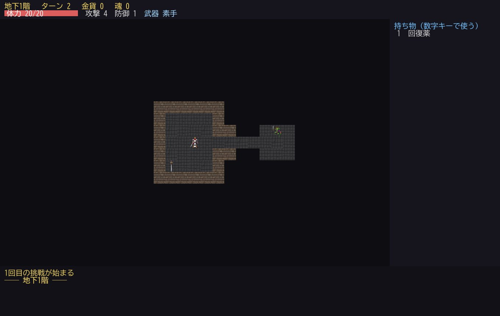
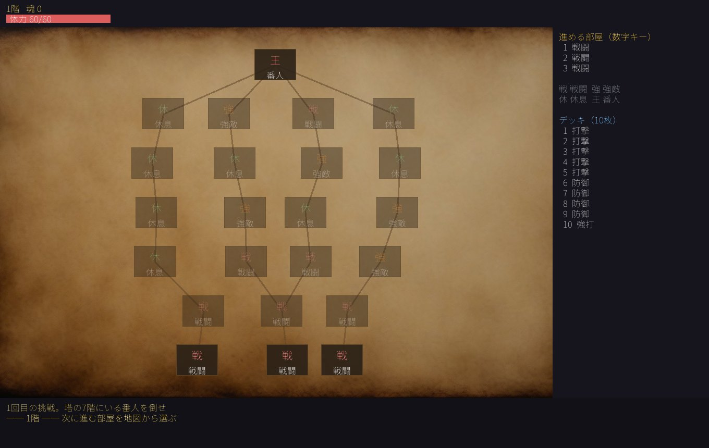
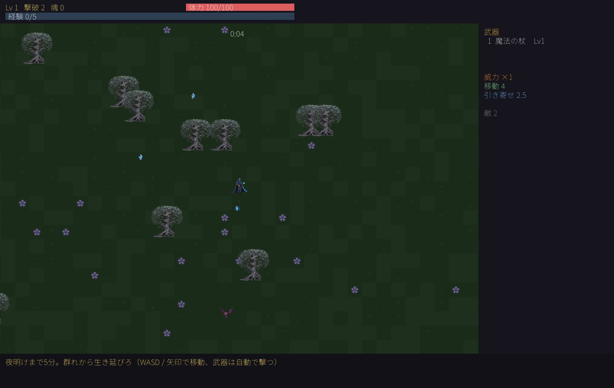
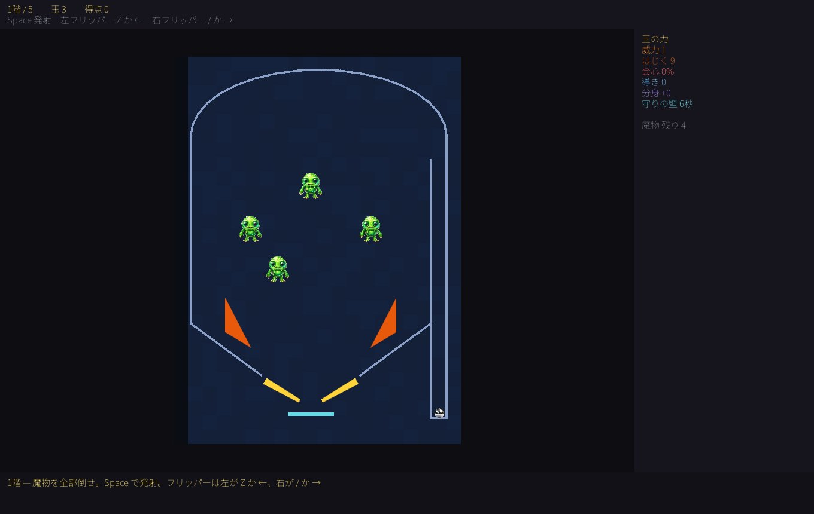
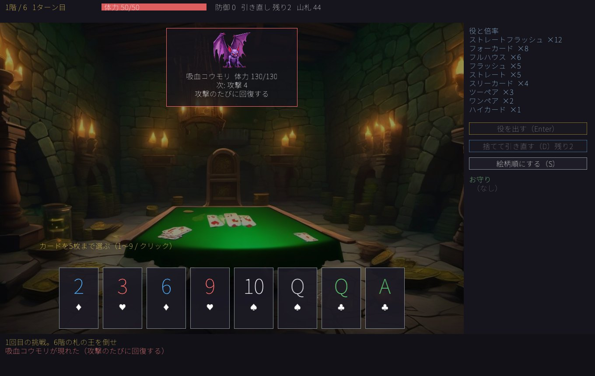
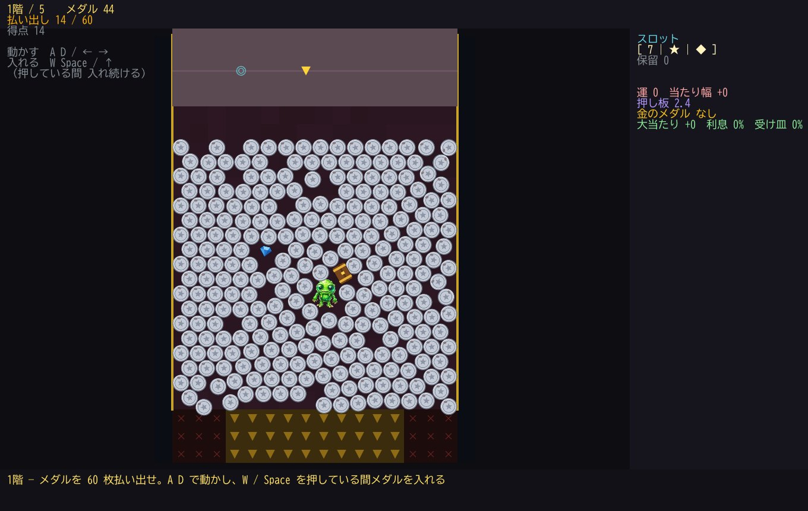
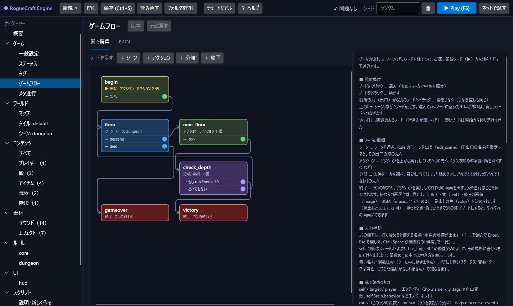
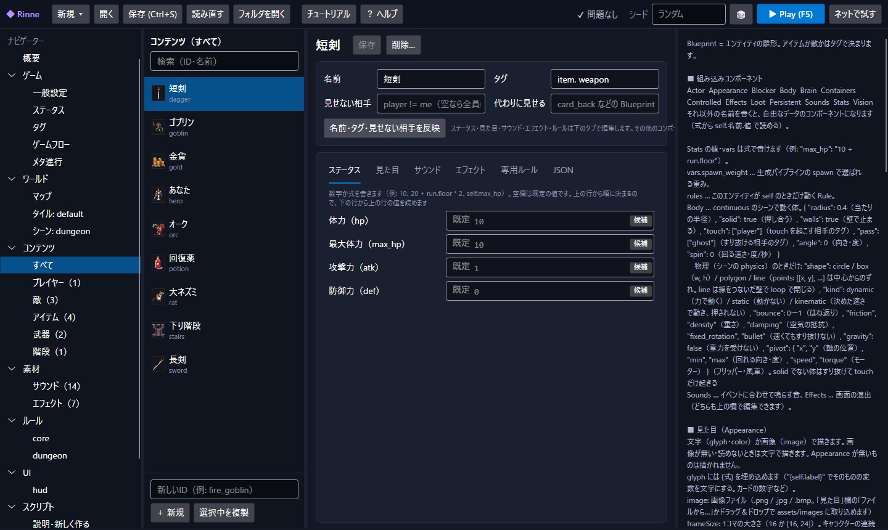

7つのテンプレートから始められます
どれも最初から遊べる1本のゲームです。中身はすべて同じ仕組み（ルール・Blueprint・ゲームフロー）でできているので、見比べながら混ぜたり作り変えたりできます。テンプレートを使わず、空のプロジェクトから1つずつ作ることもできます。






できること
「エンジン側で創作を縛らない」がいちばんの方針です。決まったゲームの型を選ぶのではなく、部品を組み合わせて作ります。
ルールをフォームで書く
「いつ（〜したとき）」「もし（条件）」「こうする（アクション）」を選んでいくだけ。式には入力補助が付き、打ち間違いはその場で知らせます。慣れたら JSON で直接書くこともできます。たくさんのカードに共通の処理は、1つの元に書いて受け継がせれば、直すのも1か所です。
ゲームの流れを図で組む
タイトル・階・ボス・終わりの画面などを、ノードを線でつないで作ります。マップの生成も手順をフォームで並べ、その場でプレビューできます。
ターン制もリアルタイムも
マス目のターン制、自由に動けるリアルタイム、物理演算、マップを使わないカード型まで、シーンごとに選べます。
画像・音・演出
キャラクターは文字でも画像（コマ割りアニメ）でも。息づかい・踏み込み・手札のホバーや狙いの矢印など、式で書く動きも付けられます。手持ちの wav / mp3 / ogg を効果音や BGM（ループ区間つき）に使えます。
みんなで遊ぶ
同じ PC での2人プレイと、ネット越しのプレイ（ホスト方式・LAN や IP を指定して接続）に対応。見せない情報（相手の手札など）も隠せます。
もっと自由に：スクリプトとプラグイン
足りないところは JavaScript のスクリプトで。さらに速さや .NET の部品が必要なら C# のプラグイン（DLL）でアクションや関数を足せます。
AI に手伝ってもらう（任意）
敵やアイテムの案出し、注文と雰囲気からのゲームの下書きを AI に頼めます。OpenAI・Anthropic・Google の自分の API キーか、PC で動かす Ollama を使います。Claude Code や Codex をプロジェクトのフォルダで起動して、ファイルを直接作ってもらうこともできます（説明書を自動で置き、書いたファイルは自動で読み直します）。
仲間と作る・配る
GitHub を使った共同作業（送る・受け取る・ぶつかったらファイルごとに選ぶ）に対応。できたゲームは「書き出し」で、エディターを持っていない人が遊べる形にできます。
はじめてでも迷わないように
作りながら覚える9歩のチュートリアルと、用語集・「こんなときは」をまとめたヘルプが入っています。どの画面にも、右側に説明があります。


ダウンロード
無料でお使いいただけます。現在はベータ版です。
はじめかた
- zip を好きな場所に展開し、中の
Rinne.exeを開きます。.NET などを別に入れる必要はありません。 - 最初の画面の「はじめての方へ: 作りながら覚えるチュートリアル」から始めるのがおすすめです。
- 展開したフォルダの中のもの（players・templates など）は、動かしたり消したりしないでください。
はじめて開くとき
- 発行元の署名が無いため、SmartScreen の警告が出る場合があります。「詳細情報」→「実行」で開けます。
更新
- 起動したときに新しい版があるかを確かめ、あればお知らせします。「更新する」を押したときだけ、取ってきたファイルの SHA-256 を確かめてから入れ替えます（勝手には入れ替えません）。
- Program Files など書き込めない場所に置いたときは入れ替えられないため、このページから入れ直してください。
一部の機能に必要なもの
- 共同作業（GitHub）: Git for Windows
- AI の機能: 自分の API キー（OpenAI・Anthropic・Google）か Ollama。AI エージェントは Claude Code か Codex（それぞれの契約が要ります）。使わなくても、ほかの機能はすべて使えます。
作ったゲームを配るとき
- Windows 向けのほか Mac・Linux 向けにも書き出せますが、Mac・Linux の実機での動作はまだ確認していません。配る前にその OS で動くかをお確かめください。
- C# のプラグイン（DLL）を使ったゲームは、遊ぶ人の PC でその DLL が動きます。中身を知っている DLL だけを入れてください。
ベータ版について
- 開発中のため不具合が含まれる場合があります。作ったプロジェクトは、ときどき別の場所にも写しておくと安心です。
- 使っているオープンソースの部品のライセンスは、同梱の
THIRD-PARTY-NOTICES.txtにあります。